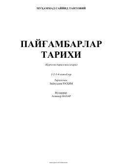

PTQur'on qissalaridagi payg'ambarlarning ibratli hayoti va tarixi.
Ushbu kitob Muhammad Sayyid Tantaviyning mashhur asari bo'lib, Qur'oni Karimda zikr etilgan payg'ambarlar tarixi va ularning ibratli hayotlari haqida so'z yuritadi. Kitobda Qur'ondagi suralarning nozil bo'lish sabablari va payg'ambarlarning o'z qavmlari bilan bo'lgan qissalari qiziqarli va tushunarli uslubda bayon etilgan. Asar 1-2-3-4-kitoblarni o'z ichiga olgan to'liq to'plam sifatida taqdim etilgan.